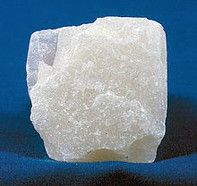
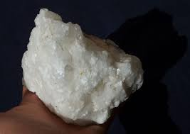
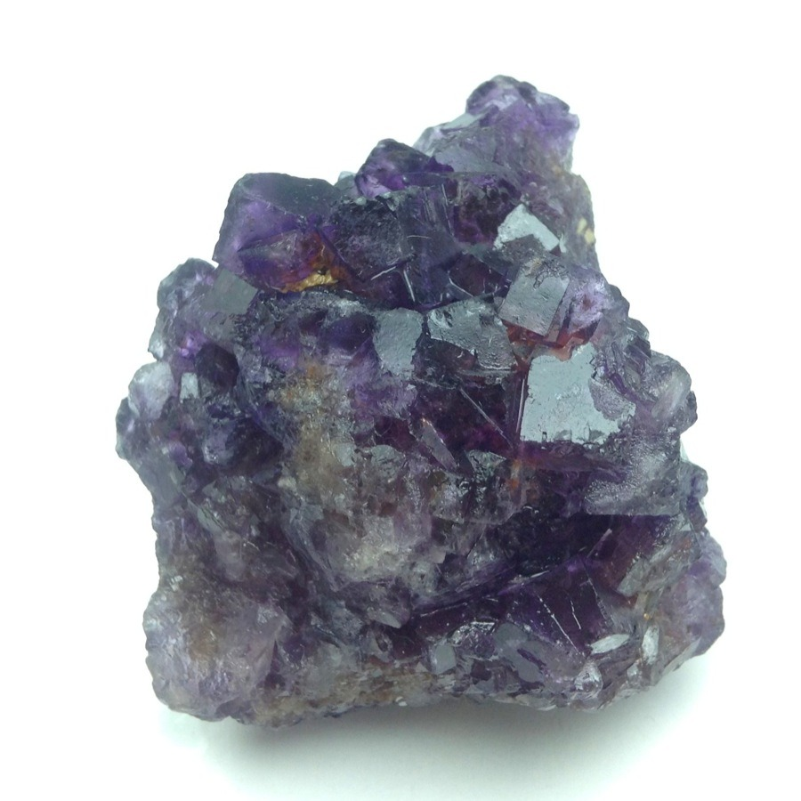
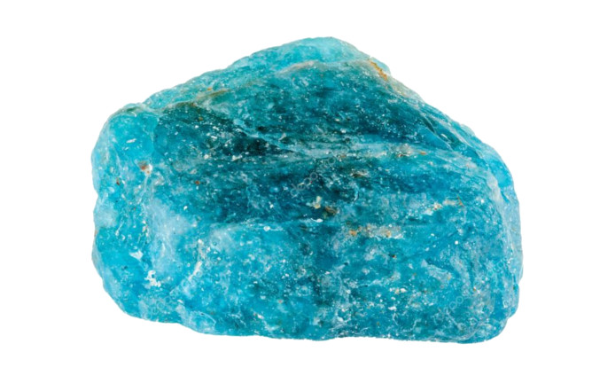
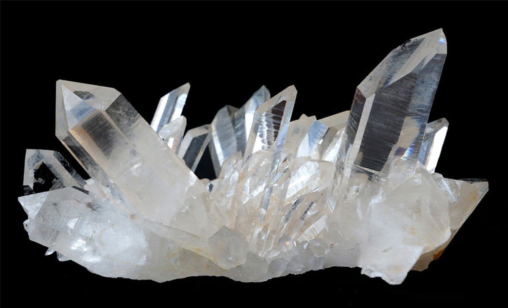
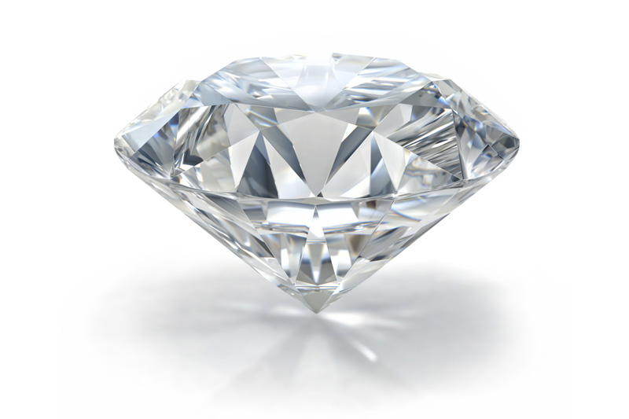

Para esta práctica me piden que realice una copia de la tabla de Mohs.
| Dureza | Imagen | Mineral | Se raya con/raya a | Composición Química | >|
| 1 |  | Talco | Se puede rayar fácilmente con la uña | Mg3Si4O10(OH)2 | |
| 2 | |
Yeso | Se puede rayar con la uña con más dificultad | CaSO4·2H2O | |
| 3 |  | Calcita | Se puede rayar con una moneda de cobre | CaCO3 | |
| 4 |  | Fluorita | Se puede rayar con un cuchillo de acero | CaF2 | |
| 5 |  | Apatito | Se puede rayar difícilmente con un cuchillo | Ca5(PO4)3(OH-,Cl-,F-)l | |
| 6 | |
Ortosa | Se puede rayar con una lija para el acero | KAlSi3O8 | |
| 7 |  | Cuarzo | Raya el vidrio | SiO2 | |
| 8 | |
Topacio | Rayado por herramientas de carburo de wolframio | Al2SiO4(OH-,F-)2 | |
| 9 | |
Corindón | Rayado por herramientas de carburo de silicio | Al2O3 | |
| 10 |  | Diamante | El material más duro en esta escala (rayado por otro diamante) | C |